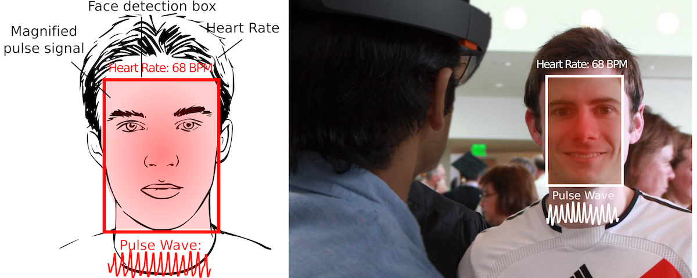

Overview
Surgeons could see whether a transplanted organ/tissue has blood flowing to it. Physical trainers would be able to see if athletes are in their “zone”. People could increase their awareness of their physiological impact on others.
Using augmented reality we built a pair of glasses that does exactly that.
A mixed reality application that enables real-time hands-free measurement and visualization of blood flow and vital signs.
Our application runs on the Microsoft Hololens without a need for tethering the device or any additional hardware. The system combines a front-facing camera, remote imaging photoplethysmography software and a heads up display allowing users to view the physiological state of a person simply by looking at them.
We augment the appearance of the subject with the blood flow signal. Augmenting the real-world with physiological signals has key advantages as holograms can be displayed on the objects/people of interest interfering with other elements.
The heart rate of the wearer is displayed in the top of the facial region. The semi-transparent mesh is augments that skin in real-time. An optional pulse wave plot can be displayed below the facial region. Version 2.0 will allow visualization of arousal/stress from changes in the HRV parameters.